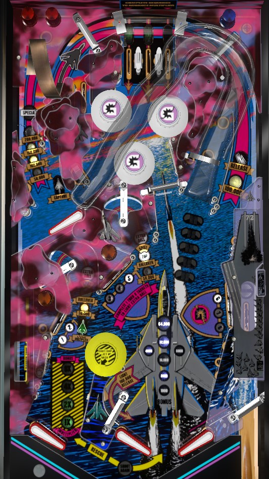

Build multipliers by completing the top lanes at any time or shooting the lower left mini-loop immediately after the ball drains from the upper flipper. Lock a ball at the hole labelled Capture near the upper flipper. To release the ball and start multiball, have the ball trigger the one-way gate near the middle bottom flipper to light the right orbit, then shoot said lit right orbit. During multiball, all playfield score is multiplied by the earned multiplier. The most consistent big points in multiball come from shooting the vertical loop from the upper flipper or having a ball ricochet into the 500,000 lane entrance just above the 6 standup target.
Gold Wings has a very uniquely segmented layout.
When the ball comes down from the top lanes and into the bumpers, it can go one of two directions: down-right, through the spinner to the "standard" pair of flippers, or down-left, to the upper flipper. The upper flipper is operated with the right flipper button and has two shots: the Capture on the right and the vertical loop on the left. A full shot to the vertical loop puts the ball back in the top lanes. If the ball drains out of the upper flipper area, it will drop into the Danger Zone, an area in the far lower left operated by a second left flipper. The easiest ways to get from the Danger Zone to the conventional-flipper area are a deflection off the 1-2 standup targets or use of the lower left loop.
The right orbit shot puts the ball into the top lanes. The ramp shot puts the ball on the upper flipper for a chance at a lock or vertical loop shot.
Multipliers are one of the most important pieces of scoring on Gold Wings. Your multiplier is indicated on the lower left of the playfield near the Danger Zone flipper and serves as both an end-of-ball bonus multiplier and a playfield multiplier during multiball.
The most common way to earn a multiplier is by completing the top lanes. (Always full plunge to the top lanes.) Lanes score 10,000 points and a bonus advance when lit, or 1,000 and no bonus when unlit. Roll through a lit lane to unlight it. Lane change is always available with the right flipper only to move which lanes are lit. Unlighting all 3 lanes will relight them and increase the multiplier by 1x, up to its maximum of 15x.
When the ball drains from the upper flipper area and falls into the Danger Zone, the lower left loop will be lit green for about 5 seconds. Making this loop during this time instantly awards 1 multiplier.
At any given time, either the lower left loop or the center mini-loop will be lit for Spot Top, and the other will be lit for 50,000 points. Spot Top awards credit for one top lane for free. Making either of these two mini-loops alternates which one is lit for Spot Top and which one is lit for 50,000.
At any time, a ball can be locked in the lane labelled Capture near the upper flipper. Doing so scores 10,000 points and feeds a new ball to the shooter lane. To release the locked ball and start multiball, you need to qualify the lock release at the right orbit by having the ball go through the gate just above the center left flipper. Making this gate lights the Release until it is made if a ball is locked; it also lights the right orbit for 100,000 points for about 5 seconds whether there is a ball locked or not. Shooting the right orbit when it is lit for Release starts 2-ball multiball. Locks can be stolen in a multiplayer setting.
During multiball, there are no new scoring features or jackpots, but all scoring is multiplied by the earned multiplier. This even applies to the vertical loop scoring (up to 200,000 points times multiplier), the right orbit reflex scoring (100,000 times multiplier), or the secret lane on the right (500,000 times multiplier). The only things that are not affected by the multiplier are the Extra Ball, which always scores 1 extra ball or 500,000 points, or the vertical loop's Special, which always scores 2 specials during multiball (2 free games or 1,000,000 points).
If you score 500,000 points or more at once with a single shot- whether through an extra ball or special that scores points, or a multiplied shot in multiball that gives 500,000 or more- the game will play a very loud air raid siren in celebration of your achievement.
The vertical loop value starts at 50,000 points. Making the loop scores and advances the lit value in the sequence 50,000 - 100,000 - 150,000 - 200,000 - Special. Collecting the Special resets the value back to 50,000 points. By default, the vertical loop value is reset at the start of each ball, but a game setting can allow it to be carried over from ball to ball.
Pop bumpers always score 1,000 points each. The spinner always scores 100 points per spin.
The 8 standup targets around the bottom of the table are appropriately numbered 1 through 8. All 8 targets start out lit. 1 and 2 are in the Danger Zone; 3-4-5 are in center playfield between the two mini-loops; 6-7-8 are on the right. Hit a lit target to score 15,000 points plus a bonus advance and make that target flash. Hit a flashing target to score 10,000 points plus a bonus advance and unlight that target. Hit an unlit target to score 5,000 points only. Unlight all 8 targets to light one of the mini-loops for an extra ball, alternating with each slingshot hit.
Game settings determine whether only unlit targets are preserved to the next ball, or if unlit and flashing targets both have their statuses preserved.
Any time after the plunge, the switch in the shooter lane scores 500,000 points. To trigger this switch, the ball needs to go through a secret entrance just above the #6 standup target. You'll almost always end up here only by accidental ricochet, though it is possible to intentionally shoot a ball off the #5 standup target or the post between the center mini-loop and the spinner and have it end up in the secret lane. In multiball, the 500,000 points is multiplied up to a possible 7,500,000 points with a maximum 15x multiplier.
End of ball bonus is advanced by lit top lanes, lit or flashing standup targets, and making any vertical loop or mini-loop shot. Multiplier is advanced by completing the top lanes or shooting the lower left mini-loop immediately after entering the Danger Zone. Base bonus and multiplier are both always carried over from ball to ball. Max bonus is 15x 127,000 = 1,907,000 points, which can be quite significant. Be careful with nudging, because this era of Gottlieb game still does not have tilt warnings and will instantly tilt your ball away.
In competition/novelty play, extra balls and specials score 500,000 points.
Vertical loop value can be set to carry over or reset after each ball.
1-8 standup targets can be set to always carry over, or only carry over if their were completely unlit first.